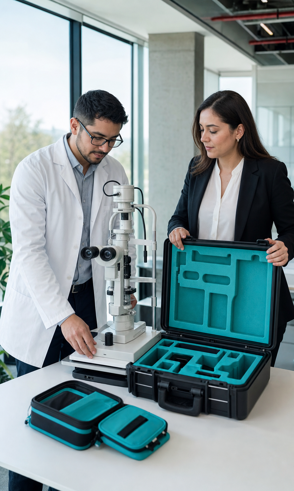

Vamos a tu empresa
Instalamos una estación de atención en terreno, reduciendo traslados, permisos y tiempos de ausencia laboral.
Salud visual en tu lugar de trabajo
Coordinamos operativos oftalmológicos profesionales para que tus colaboradores accedan a evaluación y asesoría visual en terreno sin interrumpir la jornada laboral.
Por qué elegirnos
Una experiencia sencilla y de alto impacto para Recursos Humanos, Comités Paritarios y cada colaborador.

Instalamos una estación de atención en terreno, reduciendo traslados, permisos y tiempos de ausencia laboral.
Te asesoramos antes y durante la jornada para organizar turnos por colaborador, espacio y flujo sin fricciones.
Acerca el cuidado preventivo, mejora el rendimiento visual frente a pantallas y entrega un beneficio tangible muy valorado.

El operativo
Diseñamos la jornada según los horarios y turnos de tu equipo para una atención profesional, cercana y de calidad médica.
Revisión orientada a detectar vicios de refracción, fatiga visual digital y necesidades correctivas de cada colaborador.
Orientación personalizada con amplio catálogo de armazones, filtros de luz azul y cristales ópticos certificados.
Coordinación previa, agenda por turnos y entrega de lentes con ajuste personalizado directamente en tu empresa.
Respuestas claras
Todo lo que necesitas saber antes de coordinar tu próxima jornada de salud visual.
No. El traslado del equipo profesional, instrumental óptico y montaje del operativo en tus instalaciones es 100% gratuito. Los colaboradores acceden a precios preferenciales de convenio y facilidades de pago (descuento por planilla, bienestar o copago).
Solo requerimos una sala de reuniones, oficina o espacio cerrado con una mesa, sillas y una toma de corriente estándar (220V). Nosotros llevamos todo el equipo tecnológico necesario.
La evaluación y asesoría toma entre 15 y 20 minutos por persona. Coordinamos una pauta horaria por turnos para que ningún área productiva quede desatendida.
Los lentes confeccionados con cristales y armazones elegidos se entregan en un plazo estimado de 7 a 10 días hábiles directamente en las oficinas de tu empresa, realizando el calce y ajuste final en terreno.
Conversemos
Cuéntanos sobre tu empresa, dotación de colaboradores y coordinemos una fecha para tu equipo.